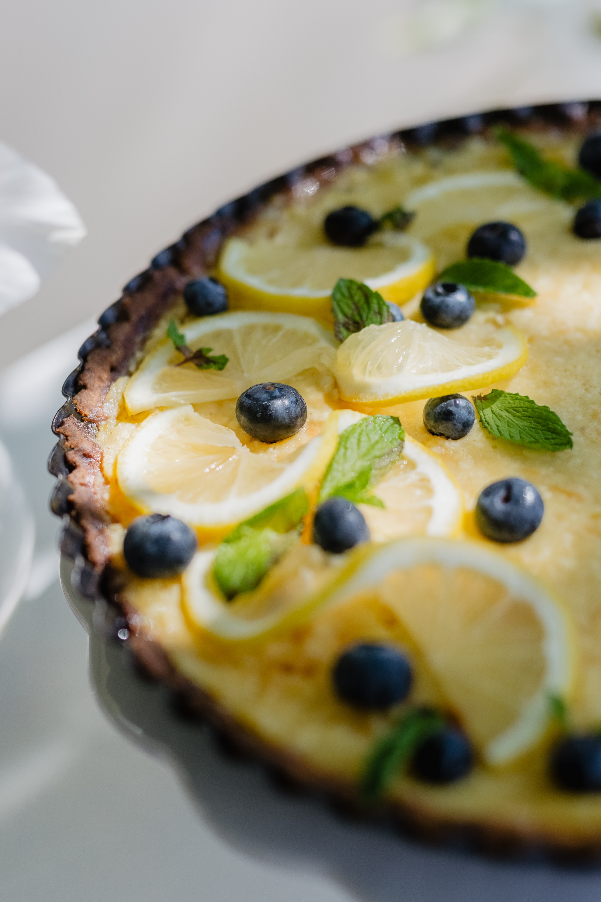

Description
A traditional French-style lemon tart with creamy, dreamy, lemon curd filling, that tastes just like the ones in Paris. It's my mom's recipe and has been a favorite in my family for years.
Ingredients
Crust
Lemon Curd Filling
- 2 large eggs plus 2 egg yolks (or 3 whole eggs)
- 3/4 cup granulated sugar
- 1 table spoon lemon zest
- 1/2 cup lemon juice
- 2 tablespoons heavy cream
- 1/2 cup unsalted butter
Steps
- In a medium heatproof bowl, place eggs, sugar, lemon zest, lemon juice, and heavy cream, if using, and whisk to combine. Place the bowl over a saucepan of simmering water (brain-marie). Cook on moderate heat, whisking constantly, until mixture becomes thick.
- Remove from heat and immediately strain mixture through a sieve. Add butter, a few cubes at a time, and whisk until completely melted and incorporated, and mixture is smooth. Take your time with it
- Fill the tart shell with lemon curd, then refrigerate for at least 4 hours until chilled. Serve with berries and whipped cream if you like.
Return to the top
Previous page